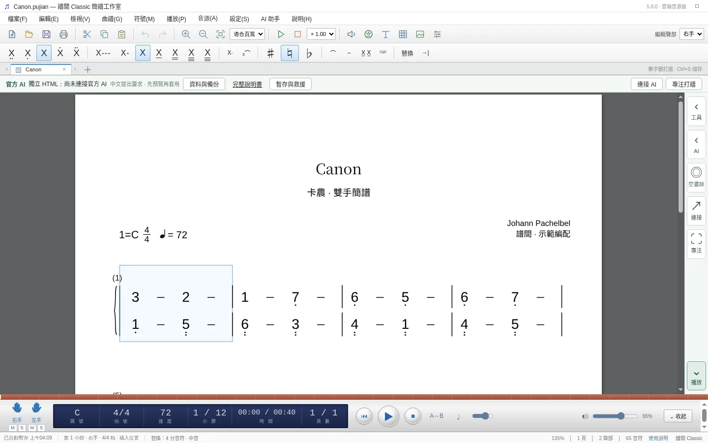
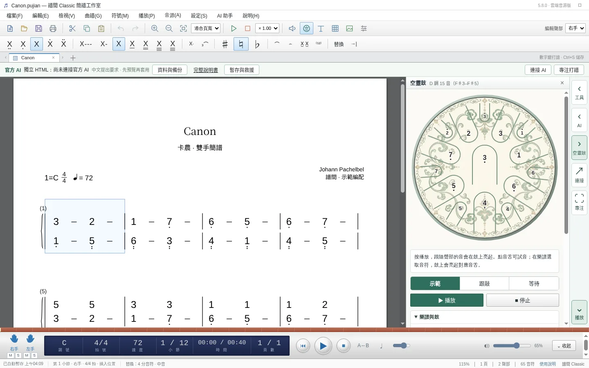

譜間
簡譜打譜工作室。為每星期都要出譜的音樂老師而寫。

做甚麼用
打簡譜要快
數字 0 至 7 輸入音符，方向鍵移動和改音高，快捷鍵與常用的簡譜軟件相容，轉用不必重新記鍵。
出譜要整齊
自動把樂曲排成一至兩頁，行距、連線、八度點和小節號都有規則處理。太密時會建議清晰排版，預覽後才套用。
聽得到才知對不對
內置空靈鼓、鋼琴、結他、豎琴、長笛及中國管樂等真實錄音音源，打完即可試聽，亦可匯出 MP3。

空靈鼓跟敲
打開鼓面，播放時對應的音舌會亮起。有示範、跟敲和等待三種模式，學生可以跟着鼓面一個音一個音練。
曲譜可一鍵移調配合手上的鼓，亦可輸出「譜加鼓面」影片，方便課後溫習。
記號和匯出
- 長笛及笛子演奏記號：吐音、花舌、換氣、波音、疊音、打音、滑音等。
- 匯出 PDF、MP3、WAV、影片及 MusicXML，MusicXML 可再匯入其他打譜軟件。
- 離線使用，樂譜存在自己的電腦；可另行連接 AI 助手協助編寫。
試用安排
譜間現時在張老師的課堂內測試，暫未公開發售。音樂老師、學校或機構有興趣試用，請 WhatsApp 說明用途和常用樂器，會按情況安排。
申請試用譜間
告訴張老師你教甚麼樂器、平時用甚麼軟件出譜，以及每星期大概要出幾多份譜。